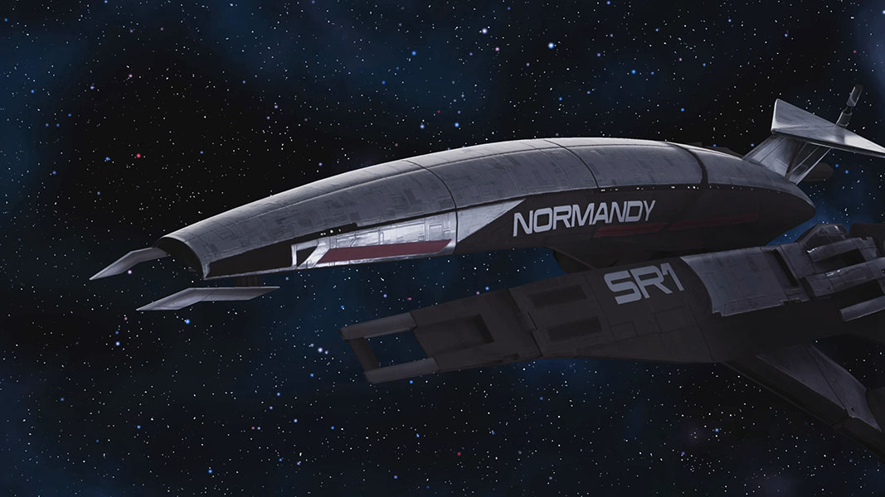
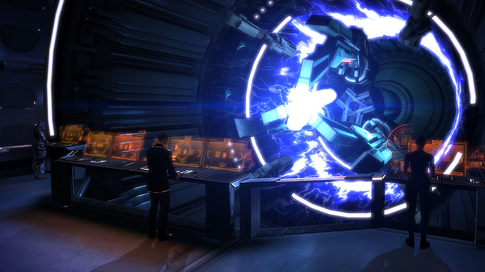

La Normandía es un prototipo de fragata para misiones de reconocimiento en zonas peligrosas. Está equipada con tecnología de punta, donde su característica principal es su avanzado sistema de camuflaje. Esto la convierte en la primera y única nave furtiva de la galaxia. Fue construida en conjunto por la Alianza de Sistemas y la Jerarquía Turiana, y su primer vuelo fue en 2183.

El sistema de camuflaje SCI (sumidero de calor interno) le permite a la Normandía almacenar sus emisiones caloríficas al interior del casco, haciéndola indetectable para los radares enemigos por hasta tres horas de vuelo continuo.*
Lo anterior no sería posible sin el revolucionario motor Tantalus. Dos veces más potente que el de una nave convencional, le permite a la Normandía volar sin la necesidad de propulsores y viajar a velocidades más rápidas que la luz por más tiempo.

¡Conoce al equipo! Elige a un tripulante para saber más.